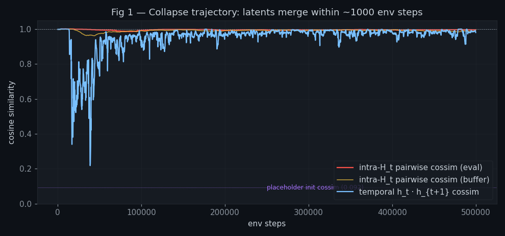
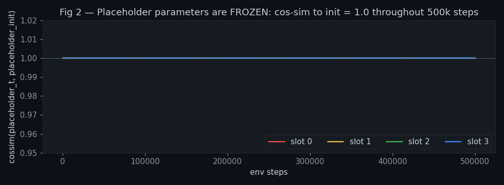
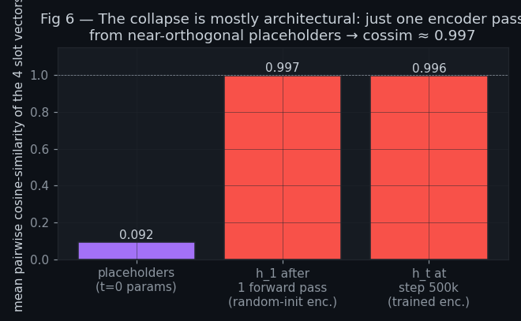
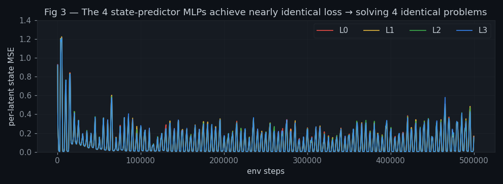
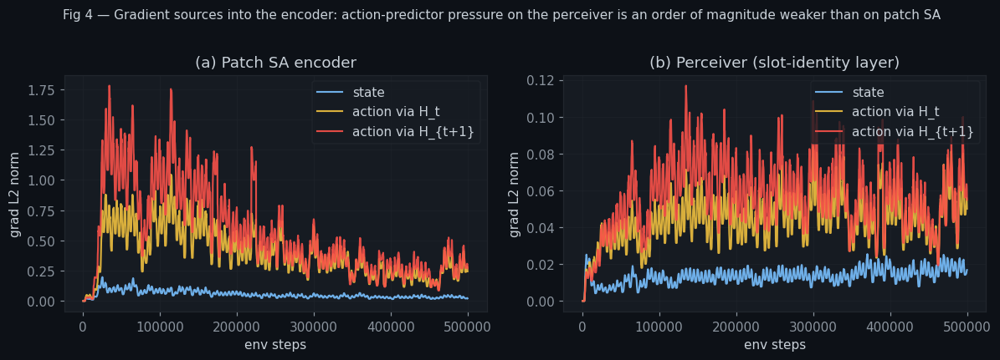
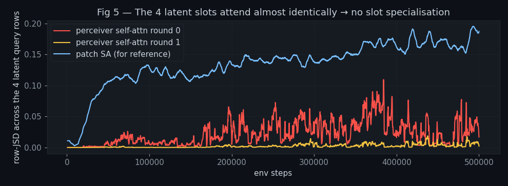

Diagnosis of representation collapse in exp_006_interleaved_freezing
(parent: exp_003_3_state_only_reward) — based on the 500k-step run
run_20260522_004244_fresh. Six experiments + numerical evidence + architectural argument.
≈ 0.997
already after a single forward pass with random weights, and stays there for
the entire 500k-step training run. We trace the collapse to three independent
failure modes that all point the same way:
torch.no_grad(),
and the JEPA forward feeds detached numpy snapshots. Result: the only
slot-identity signal the encoder ever sees is the random init, and it stays
that way bit-exactly for all 500,000 steps.L_state targets the encoder's own (collapsed) next-step output,
so identical-across-slots is a global optimum. L_action can
succeed on a tiny 1-D temporal residual without ever forcing the 4 slots
to be different. The "anti-collapse" gradient barely reaches the perceiver.For readers who haven't seen this codebase: we train a small visual world-model on a 64×64 grid puzzle ("LS20 Level 1"). At every timestep t the environment shows us a frame (a 64×64 grid of color indices), the agent picks one of 4 actions, the environment transitions, and we repeat.
Latent vectors. Inside the model, the visual state is summarised by
4 vectors each of dimension 128. We write this as
H_t ∈ ℝ4×128. Each of the 4 "slot" vectors is supposed
to capture a different piece of information about the scene — e.g.
agent position, goals, walls, recent change. We denote them
h_t[0], h_t[1], h_t[2], h_t[3].
Placeholders. At the start of every episode (when the agent has no
prior state to feed back), the encoder needs initial queries to start
the recurrent loop. The model owns a learnable parameter
placeholders ∈ ℝ4×128 for exactly this purpose. After
one forward pass the encoder produces H_1, and from then on
H_{t-1} is fed back as the queries for step t. The
placeholders are therefore "what the model believes a state looks like before
it has seen anything."
Two predictors driving the JEPA loss.
(H_t, a_t), predicts H_{t+1}. It has four
separate MLPs — one per latent slot — so MLPi only ever sees
the i-th slot input. Loss: L_state =
meani(MSE(MLPi(h_t[i]), h_{t+1}[i])). The target
H_{t+1} is .detach()-ed (no grad to encoder via
target).flatten(H_t) ‖ flatten(H_{t+1}) (a 1024-dim vector), predicts
which discrete action was taken. Loss: L_action = CE(logits,
a_t). No detach on either endpoint — gradient flows back into the
encoder through both H_t and H_{t+1}.Reward. The agent is rewarded for its own surprise:
r_t = ||H_{t+1} − predict(H_t, a_t)||² (state-prediction error,
clamped). No extrinsic reward at all — this is a pure curiosity setup.
Cosine similarity is the standard cossim(u,v) = u·v / (|u||v|):
+1.0 = same direction, 0 = orthogonal,
−1 = opposite. We use it throughout because the model's LayerNorm
fixes the magnitude of every slot at √128 ≈ 11.31, so all the
interesting variation lives in direction.
┌────────────────────────────────────────────────────────────────┐
│ 64×64 color-index frame (16 colors, 4 colors per dim) │
└────────────────────────────────────────────────────────────────┘
│ color embed → flatten 4×4 grid → 16 patches × 128
▼
┌────────────────────────────────────────────────────────────────┐
│ STAGE 1 — Patch self-attention (2 blocks, 4 heads, 2D RoPE) │
└────────────────────────────────────────────────────────────────┘
│ Z ∈ ℝ16×128 patch tokens (have RoPE, so position-aware)
▼
┌────────────────────────────────────────────────────────────────┐
│ STAGE 2 — Perceiver Resampler (2 rounds, shared Q/K/V) │
│ • Queries: placeholders (at t=0) or H_{t−1} (recurrent) │
│ • Round = cross-attn(query→patches) + self-attn(among 4) │
│ • Output LayerNorm forces ‖h_t[i]‖ = √128 for every slot │
│ • NO positional encoding for the 4 query slots │
└────────────────────────────────────────────────────────────────┘
│ H_t ∈ ℝ4×128 (the 4 latent slots)
▼
┌────────────────┬─────────────────┬─────────────────┐
│ POLICY MLP │ STATE PREDICTOR │ ACTION PREDICTOR │
│ flatten(H_t) │ 4 PER-SLOT MLPs │ flatten(H_t,H_{t+1}) │
│ → 4 action │ → predicts each │ → predicts which │
│ probabilities│ h_{t+1}[i] │ action was taken │
└────────────────┴─────────────────┴─────────────────┘
Two design choices in the perceiver are critical for what follows:
WQ, WK,
WV to every slot. The function is
permutation-equivariant over the 4 slots: shuffle the input slots and
the output slots shuffle the same way. The only thing that can
distinguish slot i from slot j is the actual content of the
input vector being fed into slot i.placeholders[i], sampled from
N(0, 0.02²). The cross-attention output is a softmax-weighted sum
of WV·patches, whose norm is several orders of magnitude
larger than 0.02. The placeholder's slot-identity signal is essentially
drowned out by the patch-derived residual on the very first attention block.If we run a debug episode against the final checkpoint and inspect the 4
latent slots h_t[0..3], we see that they are visually nearly
identical — same heatmap pattern, same norm, near-identical attention rows.
The model has 4 "containers" but is using them as 4 copies of the same
state.
Quantitatively, three signals all point at this:
| Metric | At init (step 0) | At step 500k | What it means |
|---|---|---|---|
latent_pairwise_cossim_t1 |
0.997 (after 1 fwd pass) | 0.996 | Mean cossim between the 4 slot vectors of one H_t. 1 = collapsed. |
ht_htp1_cossim_rollout |
≈ 0.998 (fully random) | 0.980 | Cossim between H_t and H_{t+1}. 1 = encoder ignores frame. |
latent_eff_rank |
1.0–1.2 | 1.51 | Effective rank of the 4×128 matrix. Out of a max of 4. 1 = all slots colinear. |
encoder.perceiver.placeholders, the only per-slot-identity
information the model ever has is the random init.Method. Parse runs/.../metrics.jsonl for
latent_pairwise_cossim_t1 (intra-H_t spread, taken from a fresh
eval pass), latent_pairwise_cossim_buf (same thing measured on
buffer samples during training), and ht_htp1_cossim_rollout (the
temporal version) at 12 milestone steps.

Method. Static check: (a) verify
encoder.perceiver.placeholders has requires_grad = True,
is a leaf tensor, is registered under encoder.parameters(), and
does receive a non-zero gradient under a one-shot forward+backward.
(b) compare the placeholders parameter from the freshly initialised model
against the same tensor in step_500000_final.pt.
(c) inspect the placeholder_drift_from_init_cossim_{i} metrics
that the training loop already logs.
placeholders.shape = torch.Size([4, 128]) placeholders.requires_grad = True placeholders.is_leaf = True named under = 'perceiver.placeholders' ← in optimizer after a synthetic backward: placeholders.grad = non-zero per-slot grad norms = [0.0047, 0.0043, 0.0054, 0.0045]
So in principle gradients can reach the parameter. There is no
numerical vanishing, no requires_grad=False mistake, no missing
optimizer group.
per-slot L2 distance init → final = [0.0, 0.0, 0.0, 0.0] per-slot cossim init → final = [1.000, 1.000, 1.000, 1.000] torch.equal(init, final) = True ← element-wise identical

The placeholder parameter has two ways into the forward graph:
encoder.perceiver.get_initial_queries(...). But
the entire block is wrapped in with torch.no_grad(): — no
gradient is recorded. Immediately afterwards (line 499) the output is converted
to numpy and stored. From this point on there is no graph
connection back to the parameter.batch.h_queries.detach(). The buffer entry came from the
already-detached numpy snapshot of the rollout. Even if some entries
originated from a placeholder forward, they are no longer connected to the
parameter.So the JEPA backward has nothing to back-propagate into
self.placeholders. AdamW skips parameters whose .grad
is None (decoupled weight decay is not applied either) → the
parameter is frozen at random init forever. This is not a bug per se; it is a
consequence of the recurrent design where the placeholders are only used at
episode-start, combined with the rollout-time-only access pattern of that
codepath.
Method. Build a freshly-initialised model (no checkpoint loaded),
reset the LS20 environment, and walk 10 timesteps using random actions
and zero training updates. Measure
mean_pairwise_cossim(H_t[0..3]) at each step.
| Step | Per-slot L2 norm | Pairwise cossim | Comment |
|---|---|---|---|
| 0 (placeholders) | [0.24, 0.24, 0.22, 0.21] | +0.092 | Near-orthogonal random init, as expected |
| 1 (one fwd pass) | [11.31, 11.31, 11.31, 11.31] | +0.997 | Collapsed already |
| 3 (recurrent) | [11.31, …] | +0.999 | |
| 10 (recurrent) | [11.31, …] | +1.000 | Pure colinearity |

Three superimposed reasons:
N(0, 0.02²) →
||p_i|| ≈ 0.23. The cross-attention residual is roughly
softmax(QKᵀ/√d)·V where V is W_V · patches with V's
entries on the order of O(1); the residual norm is typically
many times larger than 0.23. So even before a non-linearity, the
placeholder's slot-identity signal is dominated by the attention output.LayerNorm(d=128) per-slot at the output. This forces
||h_t[i]|| ≈ √128 = 11.3137 for every slot — observable in our
table above where every slot has exactly the same norm to four decimal places.
Once magnitudes are equalised, the remaining variation is direction only.
At random init, that direction is near-identical across slots.The system card claims each latent has a "dedicated" state-predictor MLP. In code that is true:
self.mlps = nn.ModuleList([
_LatentMLP(d_model, d_action, time_proj_dim, hidden_dim)
for _ in range(n_latents) # ← 4 independent MLPs
])
def _predict_clean(self, x_tau, tau, action_emb):
return torch.cat([
mlp(x_tau[:, i, :], action_emb, time_feat).unsqueeze(1)
for i, mlp in enumerate(self.mlps) # ← MLP_i sees slot i only
], dim=1)
The question is whether this structural separation produces any functional separation. We measure two things:

| Pair | cos(Wi·Wj) at init | cos(Wi·Wj) at 500k |
|---|---|---|
| L0-L1 | −0.001 | +0.009 |
| L0-L2 | +0.002 | +0.008 |
| L0-L3 | −0.000 | +0.014 |
| L1-L2 | −0.000 | +0.019 |
| L1-L3 | −0.002 | +0.022 |
| L2-L3 | +0.003 | +0.017 |
The system card argues that the action predictor (L_action =
CE(predict_action(h_t, h_{t+1}), a_t)) is the explicit anti-collapse
mechanism, because it back-propagates into both h_t and
h_{t+1} with no detach. To verify whether that gradient actually
reaches the perceiver (which is the module that owns the 4-slot
identity), we use the gradient-source-decomposition probe that's already
plumbed into the training loop.
Method. Every 25 JEPA updates the loop computes
autograd.grad(loss, encoder_sub_block_params) separately for three
losses: L_state, L_action_via_H_t, and
L_action_via_H_{t+1}, and records the gradient L2-norm per
sub-block (patch SA = Stage 1, perceiver = Stage 2).

| Step | patch SA, from state | patch SA, from L_action (H_t) | patch SA, from L_action (H_{t+1}) | perc., from state | perc., from L_action (H_t) | perc., from L_action (H_{t+1}) |
|---|---|---|---|---|---|---|
| 25k | 0.19 | 0.65 | 1.22 | 0.01 | 0.04 | 0.04 |
| 100k | 0.10 | 0.70 | 1.31 | 0.01 | 0.05 | 0.08 |
| 500k | 0.02 | 0.24 | 0.27 | 0.02 | 0.05 | 0.05 |
If the 4 latent slots really specialised over training, we should see the per-slot attention patterns diverge. We measure that with row-JSD — the Jensen-Shannon divergence averaged over all pairs of the 4 attention rows. JSD = 0 means the 4 rows are identical (no specialisation); positive JSD means the 4 slots attend to different things.

This is the central question and the most important takeaway. We have two
losses (L_state, L_action) and an extrinsic reward
that is just L_state's magnitude. Let us ask, term by term:
"does any of these go up if the 4 slots become identical?"
L_state is the per-slot MSE between the predictor output and the encoder's own next-step output:
L_state = (1/4) Σ_i ‖ MLP_i(h_t[i], a_t) − h_{t+1}[i].detach() ‖²
Suppose the encoder collapses: h_t[0] = h_t[1] = h_t[2] = h_t[3] = h̄_t.
Then by construction h_{t+1}[0..3] = h̄_{t+1} too,
because the encoder is the same on either side. Each MLP_i now solves the
same regression problem
MLP_i(h̄_t, a_t) → h̄_{t+1}. There exist weights that achieve
zero loss (an MLP can fit one input-output pair perfectly), and indeed the
trivial solution MLP_i = identity gives
‖h̄_t − h̄_{t+1}‖² which goes to zero whenever the encoder
ignores the frame.
So under collapse, L_state has a global optimum. The loss does not "want" the encoder to spread; it actively prefers it not to (less spread = fewer directions to predict = easier loss).
The action predictor sees a 1024-dim input formed by concatenating
flatten(H_t) and flatten(H_{t+1}). Under collapse,
flatten(H_t) = [h̄_t, h̄_t, h̄_t, h̄_t] — the first 128 dims are
the same as the next 128, and so on. The action predictor's first linear
layer can simply ignore the redundancy and read the relevant 256 dims
[h̄_t, h̄_{t+1}]. As long as h̄_t ≠ h̄_{t+1} (some
temporal change), the predictor can recover a_t from that 1-D
direction. Even with cossim(h̄_t, h̄_{t+1}) = 0.98 the residual
h̄_{t+1} − cos·h̄_t can encode a 4-class signal.
Empirically, in our run at step 500k:
ht_htp1_cossim_rollout = 0.98 (nearly aligned) and yet
L_action = 0.045 ≪ ln 4 = 1.386. The action
predictor is succeeding from a tiny temporal residual.
So L_action also has a global optimum under collapse — as long as that small temporal residual exists.
The intrinsic reward is just L_state. So the policy is
rewarded for visiting states where the predictor is wrong. Under collapse,
the predictor is wrong by an amount governed by the temporal change of
h̄_t — i.e. the 1-D direction that survives the
h̄_t ≈ h̄_{t+1} bottleneck. The reward gradient pushes the policy
to maximise that single direction, not to encourage the encoder to
spread.
Worse: the policy update is decoupled from the encoder update. Rewards do not back-propagate through the encoder; they update only the policy MLP. So the policy's pressure on the encoder is zero. Any encoder spread has to come from L_state or L_action, both of which we've just shown are happy under collapse.
A loss with one of the following properties:
L_div = − mean_{i≠j}
‖h_t[i] − h_t[j]‖² (or its cossim equivalent). This puts a
non-trivial cost on slot collapse.torch.no_grad(), and the JEPA forward feeds detached numpy
snapshots. We verified this both by code-trace and by direct parameter
comparison (init vs 500k are bit-equal).The interleaved-freezing experiment was designed to break collapse by
alternating the encoder and the predictors as moving targets. Our 500k-step
result n_exits = 0 (no JOINT exit ever fired) reflects exactly
the diagnosis above: alternating who-trains-when does not change the global
optimum of either L_state or L_action under collapse, and does not unfreeze
the placeholders. The next experiments should attack at least one of the
three causes — most cleanly an EMA target encoder + a positional encoding /
small explicit diversity term inside the perceiver. Fixing the placeholder
freeze alone (e.g. by letting them receive grad through the rollout forward)
is necessary but probably not sufficient, because the architectural collapse
on the very first forward pass would still need to be undone by training.
Generated by automated analysis on
the 500k run run_20260522_004244_fresh. All figures are
deterministic outputs of JEPA/experiments/exp_006_interleaved_freezing/
runs/run_20260522_004244_fresh/metrics.jsonl and one re-instantiation
of the encoder with seed 42 (Experiment 3). Raw script: see git history
adjacent to this file.